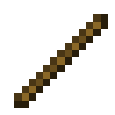
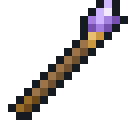

Agents
 Crafting
Crafting


An agent is a frame that runs a program. Walking, carrying, reaping, mining and laying blocks are its own; where learning beats a rule, a model in one of its slots decides, in exactly the format of that model's test, and the agent does what the model answers. You can see a model in its lantern of a head, turning faster while it thinks.
Home and models
Where you place an agent is its home, and its work happens around home. Set home makes where it stands its new home.
It has two model slots. Its Model takes a Checkpoint with a model of up to 40,000 parameters, or a Relay Card tuned to a Model Server, for a model of any size: see Serving Models. This model writes the orders you give as programs, and makes the decisions of farming, storing, hauling and building. Its Filter takes a checkpoint that passes Sorting, and tells what kind each thing is. Its screen says what is missing.
Programs
The Program tab holds what it does when nothing else is asked of it: steps between commas, checked as you type.
take bread, come, give breadrepeat (harvest, plant wheat seeds, put wheat)if ripe (harvest) else (wait 10)until full (pickup)
Run starts it and Stop stops it. A program that goes on for good, a repeat without a count, is its standing
work; any other runs once, and then it rests. The buttons on the Work tab set ready-made programs: Farm is
repeat (farm), Sort is repeat (sort), and so on, and Rest clears it.
The + beside Stop lays out every piece of a program to click together instead of typing, each saying what it
does when you point at it. Pieces go on the end, along with whatever plainly comes next: the ( that opens a block, the
mark a place needs. To name a thing, pick it up and click the program, or the order box.
The steps:
come,home,go 3to the third mark,stay,followtake 5 breadfrom the chests and barrels around home,puteverything orput wheataway,give breadto you,fetch bread, which is taking, coming and givingpickupwhat lies around it,harvest,plant wheat seeds,tillthe grass near water,mine 4 stone(with a pickaxe it carries, for blocks that need one),place oak planks 2on top of the second markwait 10seconds,say hellofarm,store,sort,haulorbuild: one round of a routine
Blocks: repeat (…), repeat 3 (…), if … (…) else (…), until … (…) and wait until …. Checks: have 3 bread,
stocked bread in the stores around home, ripe, full, night, near (you are within 8 blocks), powered 2 (the
second mark has a redstone signal), each with not before it if need be.
The trace
The Trace tab shows what it did, checked and decided, newest last, and how each step went: storing and sorting note every stack they put away, and where. A step that fails says why, and the program goes on with the next. An agent that gets stuck on its way somewhere gives up after a while; stuck three times running, it jumps home.
Routines
- farm: walks the farmland within 7 blocks of home. At each plot it shows its model the plots it has seen so far and asks what to do with this one. It harvests, waits or plants as told, and takes the harvest to the chest at home, keeping some seed.
- store: empties the barrels around home into the chests within 8 blocks, numbered 0 to 9, nearest first. A kind it has never seen goes to the emptiest chest. For a kind seen before, it shows its model where eight kinds went and asks which chest this one belongs in.
- sort: empties the barrels around home into the chests labelled with each thing's kind: Food, Plants, Wood, Stone, Ores or Tools. Name a chest in an anvil to label it, or fix a sign to it. Its filter is asked the kind of each thing by its name alone, so it can sort things it has never seen. Whatever its filter calls other, or is less than 60% sure of, goes in a chest labelled Other, or else in one with no label.
- haul: walks out along the six waymarks it was handed, loads up from the chest or barrel at the last one, and comes home. On the way back its model names the waymarks in reverse, and it walks wherever its model says.
- build: carries on a straight row on top of the blocks between two marks, laying blocks from the chests at home. It shows its model the row so far, a letter for each kind of block, and lays whatever its model says comes next. Lay the first round of the pattern yourself, starting above the first mark.
The Survey Rod
Crafting


Use a Survey Rod on blocks to mark them, up to eight, in order; use a marked block again to unmark
it, and sneak-use in the air to clear them all. Use the rod on an agent to hand it the marks: waymarks for hauling, the
blocks under the two ends of a row for building, or places for go and place.
Program Cards
Crafting (Shapeless)

A Program Card carries a program from agent to agent. Use a blank card on an agent to copy its program, and a written one to hand the program over; sneak-use a written card to copy onto it instead. In an agent's screen, click the program holding a written card to load what it says, or holding a blank card to write the program onto it; shift-click writes onto a written card too.
Orders
Start a chat message with an agent's name to give it an order: Pip, bring me some bread. It hears you within 24 blocks, or anywhere a Model Server's relays reach while you are in reach too, holding a Terminal tuned to it. You can also type an order in its screen.
Its model writes the order as a program. One step, or one of the jobs, it does at once. Anything else it reads back with [Do it] and [Cancel] to click in chat, or on the Work tab of its screen, and runs only once you say yes. An order comes before its program, which it goes back to after. If what its model writes is no program at all, it is puzzled; a model that never practised orders will mostly be puzzled.
LanternCopper IngotRedstone DustAgent
 Amethyst ShardStickSurvey RodPaperProgram Card
Amethyst ShardStickSurvey RodPaperProgram Card